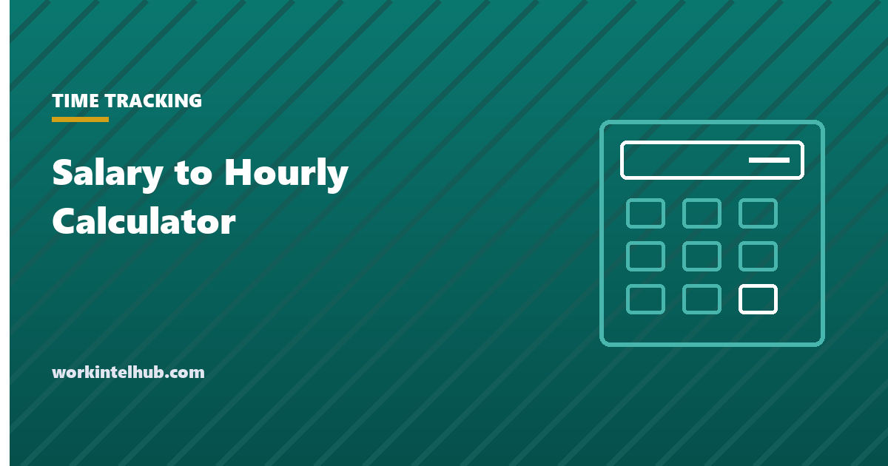

Salary to Hourly Calculator

A salary converts to an hourly rate by dividing it by the hours worked in a year, which for a 40-hour week and 52 paid weeks is 2,080. An hourly rate converts back by multiplying. The calculator does both directions and shows daily, weekly, biweekly and monthly figures alongside.
The number most people get wrong is not the arithmetic but the hours. A salary quoted for a 40-hour week that actually takes 50 is a lower hourly rate than it looks, and whether those extra hours are paid at all depends on a classification rule covered below.
Salary and hourly converter
Fifty-two paid weeks assumes paid holidays and vacation. Enter fewer weeks for unpaid time off. The overtime line assumes a non-exempt employee paid weekly overtime at 1.5x; it does not apply to exempt salaried staff.
Why 2,080, and when to use a different number
Fifty-two weeks times 40 hours is 2,080, and it is the standard assumption in job offers, payroll systems and most calculators. It counts every week as paid, which is right for a salaried employee with paid holidays and vacation. It is wrong for anyone with unpaid time off, and it is wrong as a description of hours actually worked.
| Situation | Hours to use | Effect on a $60,000 salary |
|---|---|---|
| Standard salaried, paid leave | 2,080 | $28.85 an hour |
| Two weeks unpaid leave | 2,000 | $30.00 an hour |
| 37.5-hour week | 1,950 | $30.77 an hour |
| Actually working 50 hours a week | 2,600 | $23.08 an hour |
| Contractor, 46 billable weeks | 1,840 at 40 h | $32.61 an hour before costs |
The last row is why freelancers should not price from 2,080. Unbillable time, unpaid leave, and the employer costs a salary does not include all push the equivalent rate higher. Our billable hours entry covers utilisation, which is the other half of that calculation.
Whether the extra hours are paid
The converter assumes hours over 40 are paid at 1.5 times, which is only true for non-exempt employees. Under 29 CFR Part 541, a salaried employee is exempt from overtime only if paid at least $684 a week ($35,568 a year) on a salary basis and their duties meet one of the executive, administrative, professional, computer or outside sales tests. Salary alone does not make someone exempt, and a job title does not either.
Two consequences. A salaried employee below $684 a week is owed overtime regardless of duties. And a salaried employee above it whose duties do not meet a test is also owed overtime, which is the more common and more expensive error. The Department of Labor's 2024 rule that would have raised the threshold was struck down and was formally rescinded in May 2026, so $684 remains the figure. Our exempt versus non-exempt entry covers the duties tests, and the overtime calculator works out what a non-exempt salaried employee is owed from the regular rate.
Comparing an hourly offer with a salaried one
Convert both to the same basis, then adjust for what the salary includes. Paid holidays and vacation are typically worth 10 to 15 days, which is 4 to 6 per cent of the year. Employer-paid health insurance, retirement matching and paid sick leave can add a further 20 to 30 per cent of salary in cost that an hourly contractor has to fund. And an hourly non-exempt role pays for every hour, while a salaried exempt one pays the same for 40 hours and 55.
So a $30 hourly role with no benefits and a $60,000 salary with full benefits are not equivalent, even though the converter shows $28.85. For someone who reliably works 40 hours and takes leave, the salary is worth more. For someone who will work 50, the hourly rate is, provided the overtime is actually paid. The time and a half calculator shows what those hours are worth.
Key takeaways
- Hourly rate is salary divided by hours per year. The standard 2,080 assumes 40 hours for 52 paid weeks.
- Use actual hours for a real comparison: a $60,000 salary is $28.85 at 40 hours a week and $23.08 at 50.
- Freelancers should price from billable hours, not 2,080. Unbillable time and employer costs push the equivalent rate up.
- Hours over 40 are paid at 1.5x only for non-exempt employees. Exemption needs $684 a week and a duties test, not a title.
- The 2024 threshold rule was rescinded in May 2026. $684 a week stands.
- Paid leave and benefits are worth 25 to 35 per cent of a salary. Compare offers on total value, not the converted rate.
Frequently asked questions
How do I convert salary to hourly?
Divide the annual salary by the hours worked in a year. For a 40-hour week with 52 paid weeks that is 2,080 hours, so $60,000 is $28.85 an hour. Use fewer hours if the week is shorter or some weeks are unpaid.
How do I convert hourly to salary?
Multiply the hourly rate by hours per week and by paid weeks per year. $25 an hour for 40 hours over 52 weeks is $52,000. If overtime is regular and paid, add it separately at 1.5 times the rate.
What is $50,000 a year hourly?
$24.04 an hour at 2,080 hours a year, which is 40 hours a week for 52 weeks. At 37.5 hours a week it is $25.64.
What is $20 an hour annually?
$41,600 a year at 40 hours a week for 52 weeks. At 30 hours a week it is $31,200.
Do salaried employees get overtime?
Only if they are non-exempt. A salaried employee is exempt from federal overtime only when paid at least $684 a week on a salary basis and their duties meet one of the exemption tests. Salary alone does not remove the right to overtime.
How many working hours are in a year?
2,080 for a 40-hour week counted across all 52 weeks. The number of working days in a given year varies with where weekends fall; 2027 has 261 weekdays, or 2,088 hours at 8 a day before holidays.